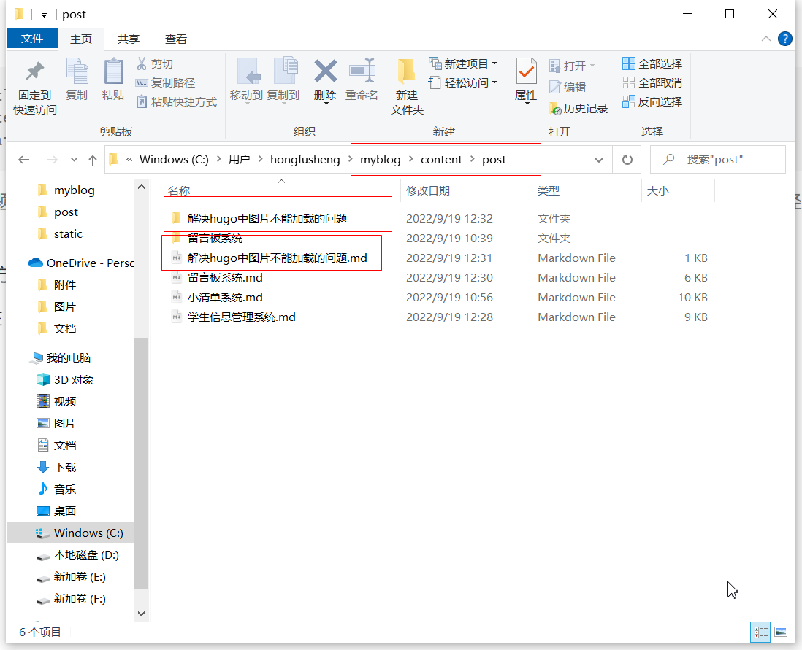
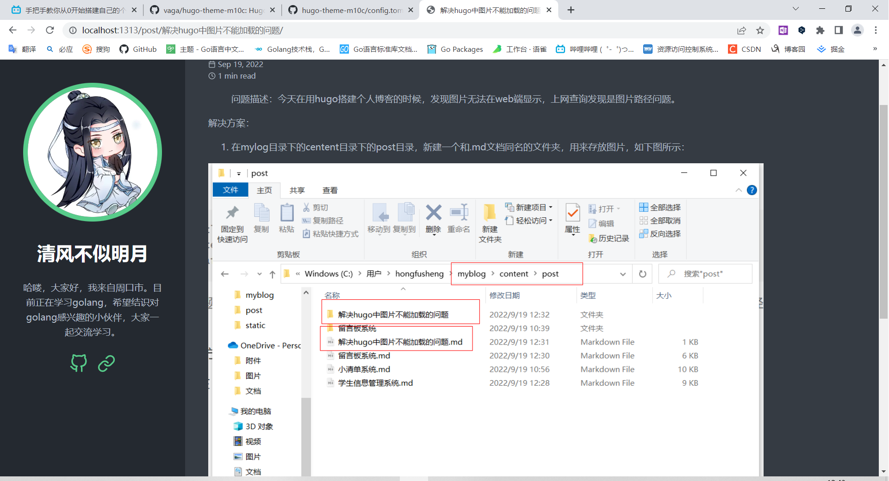

解决hugo中图片不能加载的问题
问题描述：今天在用hugo搭建个人博客的时候，发现图片无法在web端显示，上网查询发现是图片路径问题。
解决方案：
- 在mylog目录下的centent目录下的post目录，新建一个和.md文档同名的文件夹，用来存放图片，如下图所示：

- 在Markdown文档中，图片插入路径是：[]
，后缀可以是png也可以是JPG。这样在Markdown中虽然不会显示图片，但是在web可以显示。如下所示：
这里没有显示图片，但是web端如下：

web端成功显示。
总结
在Markdown文档中要注意，图片路径，直接图片名.后缀名即可。即使Markdown中没有实时渲染也不用管，web可以显示出来。